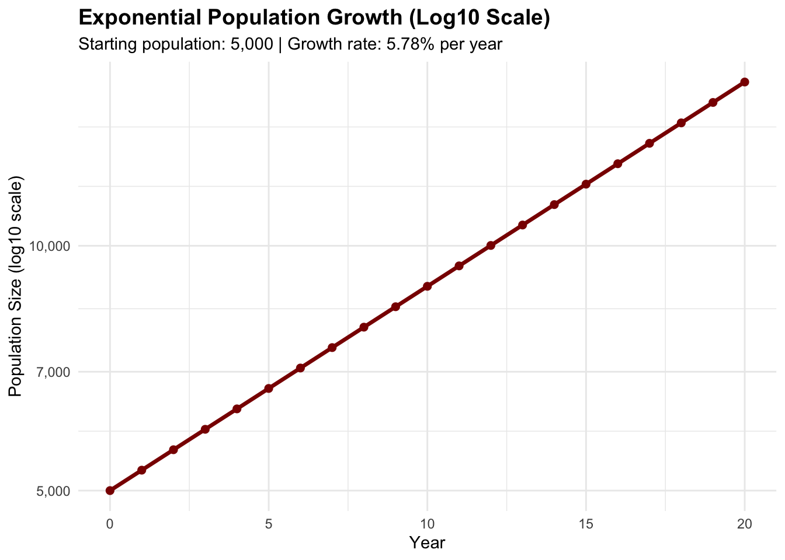

Show the code
# Initial parameters
N0 <- 53660 # Initial population
Nt <- 71655 # Population after 5 years
t <- 5 # Time period in years
# Calculate finite rate of increase
lambda <- (Nt / N0)^(1/t)
lambda[1] 1.059544Feral deer were introduced to Tasmania for hunting, but are becoming an increasing environmental, agricultural and road safety issue. They damage sensitive vegetation and even disrupt attempts to restore coastal wetlands. A recent report shows results from a new survey indicating that the deer population is booming.
(Here’s a news article summarizing the report).
I’m interested in the question how much harvesting is required to reduce deer populations. As a fisheries scientists, I’m usually asking the reverse question, of how much harvesting is too much. In this case, we want to overharest to reduce populations.
One suggestion from recreational hunting groups is to allow more hunting to control deer populations. But how much hunting would have to happen and is it feasible for recreational hunters to take that much?
The management problem is that deer in Tasmania are managed in zones, including sustainable hunting zones and no-go zones. The no-go zones are there to protect sennsitive enviroments, whereas the hunting zones are there to manage deer populations to allow ongoing recreational hunting.
But deer don’t obey jurisdictional boundaries and the new survey clearly shows the deer population is spreading. There are similar issues on the mainland with different states having different management approaches.
This problem is an interesting exercise in population modelling, and I cover the details below. But there are also scientific studies on the harvest rates required to stabilize deer populations. A study done in Tasmania estimated a rate of 25% of the population per year would be needed just to stabilise populations.
Given the estimate of 71,655 deer in 2024, that would equate to about 17,900 deer needing to be harvested each year just to stabilise the population. We’d need to harvest significantly more than that to reduce the population.
I did some research but unfortunately couldn’t find any data on how many deer recreational hunters hunt or how many hunting licenses there are in Tasmania. But we can make some educated guesses. This study found that 28 hunters killed 128 deer over 3 years on one private reserve in Tasmania.
That amounts to about 1.5 deer per hunter per year. Thus, to harvest 17,900 deer per year would require about 11,933 hunters. That of course assumes the same success and participation rate. To get a substantial population decrease we’d need a much higher harvest rate, perhaps double that number of deer, meaning over 20,000 hunters would be needed.
” Wild deer populations in Australia and New Zealand are increasing and require active management to reduce their impacts on agriculture, natural values and human safety. It is sometimes suggested that recreational hunting, a popular activity in both countries, could be an effective tool for managing wild deer populations, but its effectiveness has seldom been demonstrated (Bengsen and Sparkes 2016). Our study showed that recreational hunting of fallow deer on a private reserve in Tasmania sustained a population density of 4–5 deer per km 2, higher than the average deer density in Tasmania. To effectively act as a control tool to reduce deer density, as proposed in the Tasmanian Wild Fallow Deer Management Plan 2022–27, recreational hunters would need to increase the number of deer killed annually well above 35% of the population, while targeting females primarily. This could be achieved by removing the ‘Partly Protected Wildlife’ status of fallow deer in Tasmania and its consequent restrictions on hunting seasons, quotas and shooting equipment (The Tasmanian Government 2023). Landholders can apply for special purposes wildlife property protection or crop protection permits to control deer on their properties, but completely removing that restriction, as was done in NSW (Bengsen and Forsyth 2019), would facilitate deer management on private land and most likely increase the annual deer harvest ”
Source: https://doi.org/10.1111/emr.70001
It seems unlikely that Tasmania has that many active deer hunters that could be enabled by further removing restrictions. But more data on hunting participation is required to confirm or deny that claim.
Other approaches such as professional culling and eradication by landholders will likely be required to achieve meaningful population reductions.
We can do our own simple calculations to estimate the harvest rate required to reduce deer populations. Note I provide below as an educational example only. I recommend using the studies cited above for real advice on rates (as you’ll see I get quite different numbers).
Tasmania’s deer population has grown from about 53,660 to 71,655 individuals over 5 years (note there is errors around those numbers that we won’t consider here).
Population growth is rarely linear. For the deer a reasonable approximation would be that deer are increasingly exponentially, meaning non-linearly at an increasing numbers of new animals each year. I make this assertion based the fact that their distribution is also growing, suggesting a growing population that is currently unhindered by environmental limits (e.g. food).
For growing populations its convenient to work with instantaneous rates of increase (r). r is a the rate of increase on a multiplicative (or ‘log’) scale. Let’s see how to do that.
The finite rate of increase over a time period is given by:
\[ \lambda = \left(\frac{N_t}{N_0}\right)^{1/t} \]
Where:
Let’s calculate this in R:
# Initial parameters
N0 <- 53660 # Initial population
Nt <- 71655 # Population after 5 years
t <- 5 # Time period in years
# Calculate finite rate of increase
lambda <- (Nt / N0)^(1/t)
lambda[1] 1.059544We can convert λ to the instantaneous rate of increase using:
\[ r = \ln(\lambda) \]
# Calculate instantaneous rate of increase
r <- log(lambda)
r[1] 0.05783902To convince ourselves we’ve done the math right we can check the answer to see if we recover the original 5 year growth:
53660 * exp(r*5)[1] 71655which equals the number of deer in 2024.
Let’s visualize what this exponential growth rate means by projecting a small population forward in time. We’ll start with 5,000 individuals and see how it grows over 20 years:
library(ggplot2)
# Simulate exponential growth from a small population
years_proj <- 0:20
N_initial <- 5000
pop_projection <- N_initial * exp(r * years_proj)
proj_df <- data.frame(
Year = years_proj,
Population = pop_projection
)
# Plot on natural scale
ggplot(proj_df, aes(x = Year, y = Population)) +
geom_line(linewidth = 1.2, color = "darkblue") +
geom_point(size = 2, color = "darkblue") +
scale_y_continuous(labels = scales::comma) +
labs(
title = "Exponential Population Growth (Natural Scale)",
subtitle = paste0("Starting population: 5,000 | Growth rate: ",
round(r * 100, 2), "% per year"),
x = "Year",
y = "Population Size"
) +
theme_minimal() +
theme(
plot.title = element_text(size = 14, face = "bold"),
plot.subtitle = element_text(size = 11)
)
Note the upwards curve.
The same data on a multiplicative scale (like a scale that goes 1, 10, 100, 1000) shows the exponential growth as a straight line, which is characteristic of constant proportional growth:
# Plot on log10 scale
ggplot(proj_df, aes(x = Year, y = Population)) +
geom_line(linewidth = 1.2, color = "darkred") +
geom_point(size = 2, color = "darkred") +
scale_y_log10(labels = scales::comma) +
labs(
title = "Exponential Population Growth (Log10 Scale)",
subtitle = paste0("Starting population: 5,000 | Growth rate: ",
round(r * 100, 2), "% per year"),
x = "Year",
y = "Population Size (log10 scale)"
) +
theme_minimal() +
theme(
plot.title = element_text(size = 14, face = "bold"),
plot.subtitle = element_text(size = 11)
)
The log scale visualization reveals that exponential growth maintains a constant rate - the population increases by the same proportion each year, even though the absolute numbers get larger and larger.
Let’s say we want to reduce the deer population from 71,655 back to 53,660 over 5 years.
To do this we need to calculate what harvest rate would achieve this while accounting for natural population growth.
The target is to have the net rate of change (growth minus harvest) result in the desired decline. We can set up the equation:
\[ N_t = N_0 \times e^{(r - h) \times t} \]
Where \(h\) is the harvest rate we want to solve for. Rearranging:
\[ h = r - \frac{\ln(N_t / N_0)}{t} \]
# Starting population for harvest scenario
N_start <- 71655
N_target <- 53660
t_harvest <- 5
# Calculate required harvest rate
target_rate <- log(N_target / N_start) / t_harvest
harvest_rate <- r - target_rate
harvest_rate[1] 0.115678The required annual harvest rate is 12%. This harvest rate offsets both the population growth and achieves the desired decline.
Let’s simulate how many deer need to be harvested each year to achieve this reduction:
library(dplyr)
Attaching package: 'dplyr'The following objects are masked from 'package:stats':
filter, lagThe following objects are masked from 'package:base':
intersect, setdiff, setequal, union# Simulation parameters
years <- 0:5
pop_size <- numeric(length(years))
harvest_numbers <- numeric(length(years))
# Initial conditions
pop_size[1] <- N_start
# Simulate population with harvest
for (i in 2:length(years)) {
# Population grows
pop_after_growth <- pop_size[i-1] * exp(r)
# Calculate harvest number (proportion of post-growth population)
harvest_numbers[i] <- pop_after_growth * harvest_rate
# Population after harvest
pop_size[i] <- pop_after_growth - harvest_numbers[i]
}
# Create data frame for results
harvest_df <- data.frame(
Year = years[2:length(years)],
Deer_Harvested = round(harvest_numbers[2:length(years)])
)
harvest_df Year Deer_Harvested
1 1 8782
2 2 8229
3 3 7710
4 4 7224
5 5 6769As we can see, the number of deer that need to be harvested decreases each year as the population declines.
Note we assumed harvest after population growth (breeding) each year.
Let’s create a visualization showing a projection for how the population changes over time with and without harvest:
# Simulate population without harvest
pop_no_harvest <- N_start * exp(r * years)
# Create data frame for plotting
pop_df <- data.frame(
Year = rep(years, 2),
Population = c(pop_size, pop_no_harvest),
Scenario = rep(c("With Harvest", "Without Harvest"),
each = length(years))
)
# Create plot
ggplot(pop_df, aes(x = Year, y = Population,
color = Scenario)) +
geom_line(linewidth = 1.2) +
geom_point(size = 3) +
scale_y_continuous(labels = scales::comma,
limits = c(40000, 100000)) +
labs(
title = "Deer Population Trajectory Over 5 Years",
subtitle = "Comparing growth scenarios with and without harvest management",
x = "Year",
y = "Population Size",
color = "Scenario",
linetype = "Scenario"
) +
theme_minimal() +
theme(
plot.title = element_text(size = 14, face = "bold"),
plot.subtitle = element_text(size = 11),
legend.position = "bottom"
)Ignoring unknown labels:
• linetype : "Scenario"The plot clearly shows the diverging trajectories.
So why is my number of 12% per year so much lower than the 25% per year cited in the Tasmanian study?
For one, my calculation doesn’t account for the spatial dynamics and increasing range. Deer moving into new areas with fresh vegetation can sustain higher growth rates. For another my calculation assumes a stable age structure. This means that the proportion of juveniles to adults remains constant, which may not be the case in a rapidly growing population.
More sophisticated models, like the one used in this study, would be needed to capture these dynamics accurately.